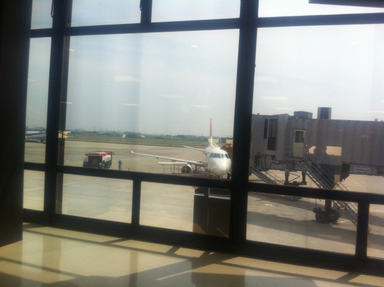
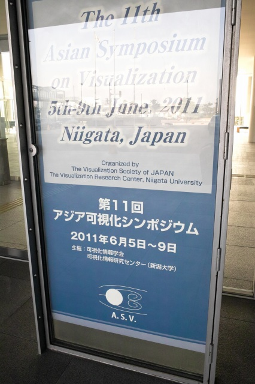
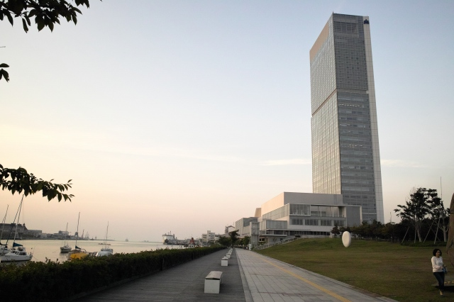
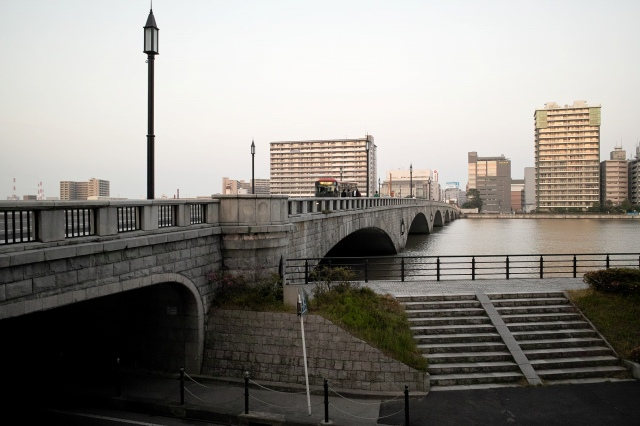
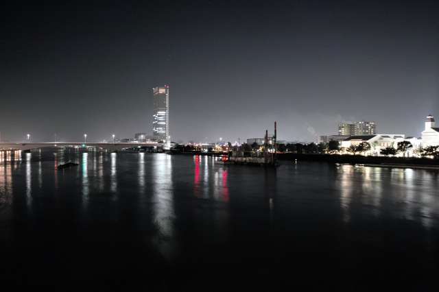
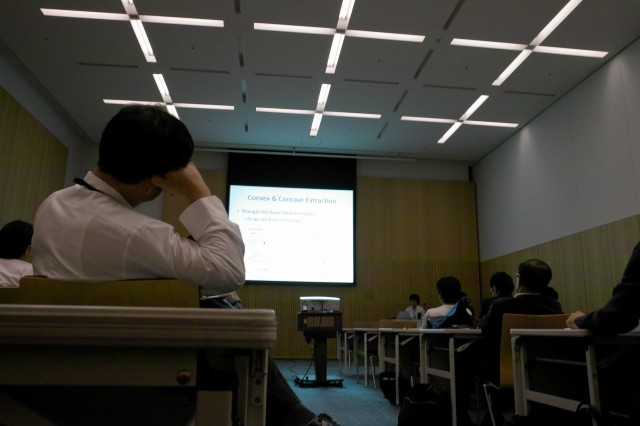
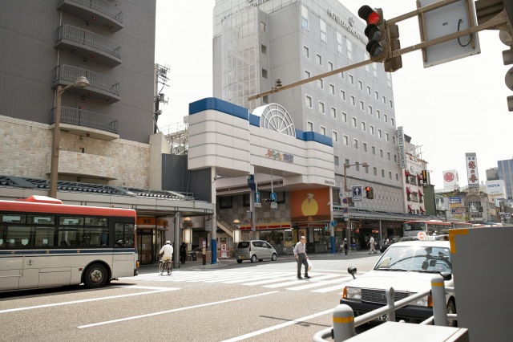
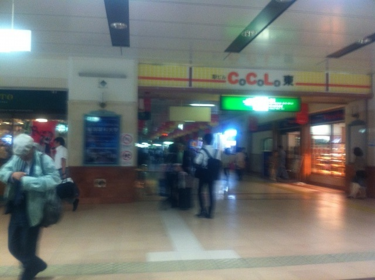
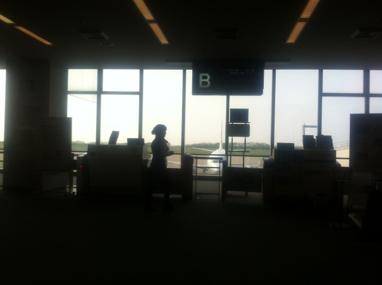

| ・ ASV 11th@朱鷺メッセ (H23.06.05-09) | |||
助教の人がThe 11th Asian Symposium on Visualizationに参加しました．発表は(Calibration Flow for Three-dimensional Velocity Field)の1件です。お仕事の都合で、前日入りして朝の発表後に帰京です。助教の人「久しぶりの新潟。都市計画マニアとしては、もっと見て歩きたかったなぁ。港、新幹線、空港、バスターミナル、高速道路と、多彩な交通手段が狭い領域に集中する都市はあまり見られないので、（すごく長いので以下略）」 |
|||
|

プロペラは狭くて苦手、今回はジェット |

まずはレジストです | ||
|

会場の朱鷺メッセとホテル |

万代橋は渡るのが楽しい | ||
|

古町まで歩いて晩飯にいったけれど、ハズレ |

発表はまぁボチボチでした | ||
|

昼休みは抜けて本町へ |
市場のお店が美味しいですよ | ||
|

省エネのため新潟は至る所照明がオフ、暗いです |

帰りもB737 | ||